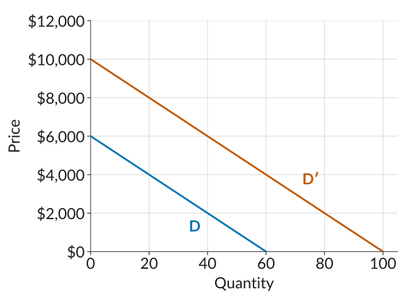
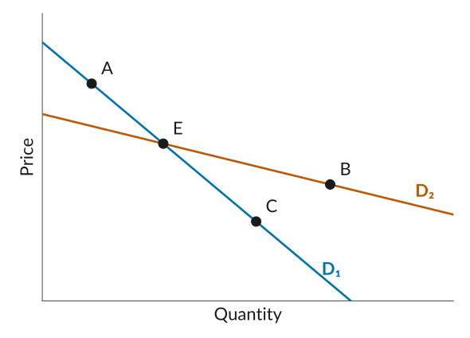

Lecture 7: Practice
Who can get away with raising prices? Demand and elasticity
Work through each problem on paper before you open its Solution.
1. Nadia’s kayak rentals
Nadia rents kayaks by the day at a lake. Her demand curve is \[Q = 60 - 2P\] where \(Q\) is kayaks rented per day and \(P\) is the price of a rental in dollars.
(a) How many kayaks does Nadia rent at a price of $20?
Solution
\[Q = 60 - 2 \times 20 = 20\]
(b) Nadia raises her price from $20 to $21. How many kayaks does she rent now? Find the percentage change in price and in demand, and the price elasticity of demand.
Solution
At $21: \[Q = 60 - 2 \times 21 = 18\]
The percentage changes: \[\begin{aligned} \%\text{ change in price} &= \frac{21 - 20}{20} \times 100 = 5\% \\[0.3em] \%\text{ change in demand} &= \frac{18 - 20}{20} \times 100 = -10\% \end{aligned}\]
The elasticity: \[\varepsilon = -\frac{-10}{5} = 2\]
Demand is elastic at $20, because 2 is greater than 1.
(c) Find the elasticity for a $1 price rise starting from $25, and for a $1 price rise starting from $10. Use whichever formula you like. Where is demand elastic, and where is it inelastic?
Solution
From $25 to $26, demand falls from \(60 - 2 \times 25 = 10\) to \(60 - 2 \times 26 = 8\) kayaks: \[\begin{aligned} \%\text{ change in price} &= \frac{26 - 25}{25} \times 100 = 4\% \\[0.3em] \%\text{ change in demand} &= \frac{8 - 10}{10} \times 100 = -20\% \end{aligned}\] \[\varepsilon = -\frac{-20}{4} = 5\]
From $10 to $11, demand falls from \(60 - 2 \times 10 = 40\) to \(60 - 2 \times 11 = 38\) kayaks: \[\begin{aligned} \%\text{ change in price} &= \frac{11 - 10}{10} \times 100 = 10\% \\[0.3em] \%\text{ change in demand} &= \frac{38 - 40}{40} \times 100 = -5\% \end{aligned}\] \[\varepsilon = -\frac{-5}{10} = 0.5\]
The formula \(\varepsilon = -\dfrac{P}{Q} \times \dfrac{\Delta Q}{\Delta P}\), with \(\Delta Q / \Delta P = -2\), gives the same answers: \(-\tfrac{25}{10} \times (-2) = 5\) and \(-\tfrac{10}{40} \times (-2) = 0.5\).
Demand is elastic at $25 and inelastic at $10.
(d) Nadia starts quoting her prices in cents, so her demand curve becomes \(Q = 60 - 0.02P\), with \(P\) in cents. Her price rises from 2,000 cents to 2,100 cents. Find the elasticity. Is it different from your answer to part (b)? Why or why not?
Solution
Demand falls from \(60 - 0.02 \times 2{,}000 = 20\) to \(60 - 0.02 \times 2{,}100 = 18\) kayaks: \[\begin{aligned} \%\text{ change in price} &= \frac{2{,}100 - 2{,}000}{2{,}000} \times 100 = 5\% \\[0.3em] \%\text{ change in demand} &= \frac{18 - 20}{20} \times 100 = -10\% \end{aligned}\] \[\varepsilon = -\frac{-10}{5} = 2\]
The elasticity is still 2, the same as in part (b). This is the same price rise, from $20 to $21, counted in cents. A 5% rise is a 5% rise whether we count in dollars or in cents, so the elasticity does not depend on the units.
2. Two coffee shops
One coffee shop sits on a street with five other coffee shops. Another is the only place to buy coffee inside a large library. Which shop is likely to face the more elastic demand? Which one can raise its price without losing many customers?
Solution
The shop on the street faces the more elastic demand. If it raises its price, its customers can walk next door, so many of them may buy elsewhere. Competition from similar products limits its ability to raise its price.
The library shop can raise its price without losing many customers. Its customers have no close substitute nearby, so its demand is less elastic.
3. Flat and steep demand curves
True or false: a steeper demand curve always has a lower elasticity than a flatter one. Explain.
Solution
False. When two demand curves pass through the same price and quantity, the steeper one is less elastic there. But slope and elasticity are not the same thing. The Dodgers demand curve from the lecture, \(Q = 90 - 0.3P\), has the same slope everywhere, yet its elasticity is 0.2 at $50 and 2 at $200. At a high price, a $10 rise is a small percentage of the price but loses a large percentage of the few buyers.
4. Which demand is more elastic?
Suppose the price of each good below rises by 10%. In each pair, which good’s demand is more elastic? Explain using one of the reasons from the lecture: close substitutes, a luxury or a necessity, how narrowly the market is defined, time to adjust, or share of spending.
- Movie tickets, or visits to the doctor.
- A new laptop, or a tube of toothpaste.
- A burger at a food court with ten other restaurants, or a ride on the only ferry to an island.
- Coca-Cola, or all soft drinks.
- Gasoline in the week after its price rises, or gasoline over the next five years.
Solution
- Movie tickets. A movie is a luxury that people can skip. A doctor’s visit is closer to a necessity.
- A new laptop. It takes a big share of a student’s spending, so a 10% rise is a lot of money. A 10% rise on toothpaste is a few cents.
- A burger at the food court. Ten other restaurants a few steps away are close substitutes. The ferry has no substitute.
- Coca-Cola. It is a narrowly defined market: if Coke’s price rises, people can switch to Pepsi or another soft drink. If the price of all soft drinks rises, there is much less to switch to.
- Gasoline over the next five years. In the first week, people still have to drive to work and school. Over five years, they have time to adjust: they can buy a car that uses less gas, carpool, or move closer to work.
5. Beach parking
A county raises the price of its beach parking lot from $20 to $25 a day. The number of cars in the lot falls from 400 to 240 a day. Many drivers park on nearby streets instead, so the number of people visiting the beach falls by only 5%.
(a) Find the elasticity of demand for spaces in the parking lot.
Solution
\[\begin{aligned} \%\text{ change in price} &= \frac{25 - 20}{20} \times 100 = 25\% \\[0.3em] \%\text{ change in cars} &= \frac{240 - 400}{400} \times 100 = -40\% \end{aligned}\] \[\varepsilon = -\frac{-40}{25} = 1.6\]
Demand for the lot is elastic.
(b) Find the elasticity of demand for visits to the beach, using the same 25% price rise.
Solution
\[\varepsilon = -\frac{-5}{25} = 0.2\]
Demand for beach visits is inelastic.
(c) Why is demand for the lot so much more elastic than demand for visiting the beach?
Solution
Street parking is a close substitute for the lot, so when the lot’s price rises, many drivers switch. There is no close substitute for the beach itself, so most people still come. The same pattern showed up with Philadelphia’s soda tax: stores just outside the city were close substitutes for stores inside it.
6. Multiple choice
1. The diagram shows two alternative demand curves, D and D′, for a product. Select all the statements that are correct.

- On demand curve D, when the price is $4,000, the firm can sell 30 units of the product.
- On demand curve D′, the firm can sell 60 units at a price of $4,000.
- At a price of $2,000, the firm can sell 40 more units of the product on D′ than on D.
- With an output of 20 units, the firm can charge $2,000 more on D′ than on D.
Solution
On D, at $4,000 the firm can sell 20 units, not 30. On D′, a price of $4,000 corresponds to 60 units. At $2,000 the firm sells 40 units on D and 80 units on D′, so 40 more. At 20 units the price is $4,000 on D and $8,000 on D′, a difference of $4,000, not $2,000. (b) and (c) are correct.
2. A shop sells 20 hats per week at $10 each. When it increases the price to $12, the number of hats sold falls to 15 per week. Select all the statements that are correct.
- When the price increases from $10 to $12, demand decreases by 25%.
- A 20% increase in the price causes a 25% fall in demand.
- The demand for hats is inelastic.
- Using these figures, we can estimate the elasticity of demand to be 1.25.
Solution
\[\begin{aligned} \%\text{ change in price} &= \frac{12 - 10}{10} \times 100 = 20\% \\[0.3em] \%\text{ change in demand} &= \frac{15 - 20}{20} \times 100 = -25\% \end{aligned}\]
So \(\varepsilon = -\dfrac{-25}{20} = 1.25\), which is greater than 1: demand is elastic, not inelastic. (a), (b), and (d) are correct.
3. The figure shows two straight-line demand curves, D₁ and D₂, which cross at point E. Select all the statements that are correct.

- At point E, demand on D₁ is less elastic than demand on D₂.
- Points A and C are on the same straight line, so demand is equally elastic at A and at C.
- The firm facing D₁ probably has more close competitors than the firm facing D₂.
- On D₂, demand is more elastic at E than at B.
Solution
At E both curves have the same price and quantity, and D₁ is steeper, so the same price rise loses fewer buyers on D₁: demand is less elastic there. Along one straight line the slope stays the same but the elasticity does not: at A the price is higher and the quantity lower than at C, so demand is more elastic at A. For the same reason, demand on D₂ is more elastic at E than at B. D₁ is less elastic, so its firm probably faces less competition, not more. (a) and (d) are correct.
4. A firm raises its price by 4%, and the quantity it sells falls by 8%. The price elasticity of demand is:
- 0.5, so demand is inelastic.
- 2, so demand is elastic.
- \(-2\), so demand is inelastic.
- 2, so demand is inelastic.
Solution
\(\varepsilon = -\dfrac{-8}{4} = 2\). The minus sign in the formula makes the elasticity positive, and 2 is greater than 1, so demand is elastic. (b) is correct.
5. A campus concert raises its ticket price from $20 to $25, and ticket sales fall from 400 to 320. The price elasticity of demand is:
- 0.8, so demand is inelastic.
- 1.25, so demand is elastic.
- 0.8, so demand is elastic.
- 16, so demand is elastic.
Solution
\[\begin{aligned} \%\text{ change in price} &= \frac{25 - 20}{20} \times 100 = 25\% \\[0.3em] \%\text{ change in demand} &= \frac{320 - 400}{400} \times 100 = -20\% \end{aligned}\]
So \(\varepsilon = -\dfrac{-20}{25} = 0.8\), which is less than 1: demand is inelastic. Option (b) divides the wrong way round, and (d) divides the change in tickets by the change in price instead of using percentages. (a) is correct.